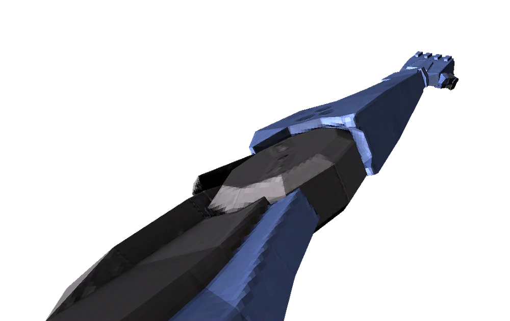
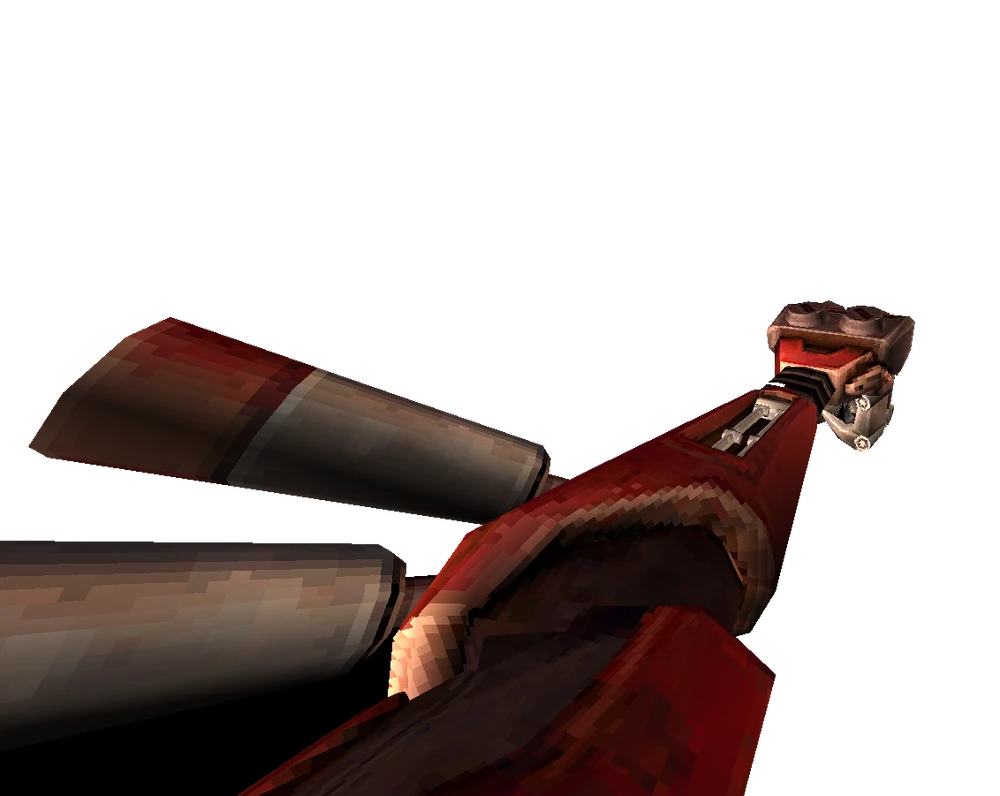
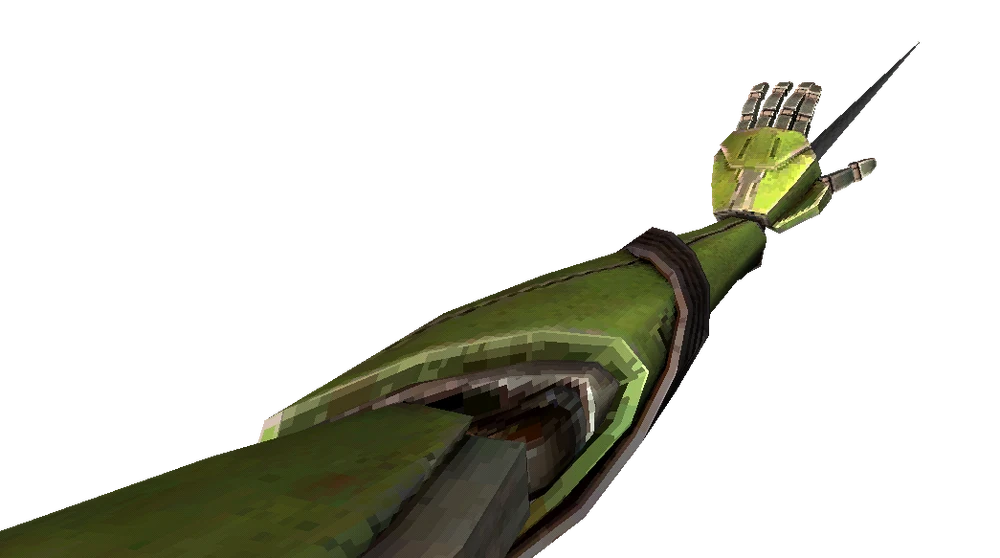

Braços

O Retroalimentador é a variante azul do braço e é o braço padrão que você recebe ao iniciar o jogo. Pode ricochetear projéteis, incluindo tiros de espingarda e moedas.
O Quebra-Punho é a variante vermelha do braço, obtida após vencer V2 na camada do Limbo. Os socos desse braço causam muito dano e mandam os inimigos para longe, mas não podem ricochetear projéteis.


O Chicoteador é a variante verde do braço, obtido depois de acabar com V2 na camada da Ganância. Ele puxa inimigos leves e objetos em direção a V1 (jogador), e puxa V1 em direção a inimigos pesados e pontos de agarramento.